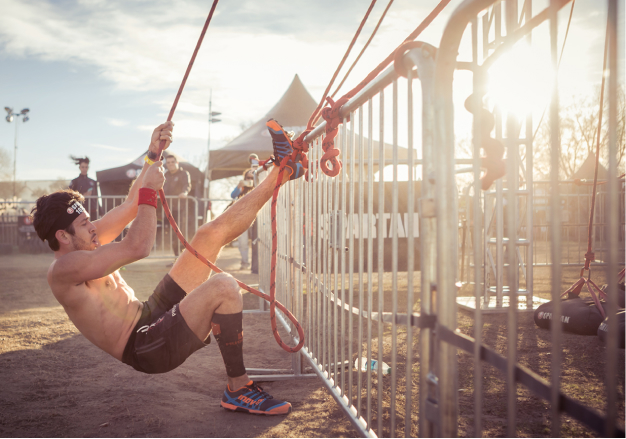

For better presentation I decide to write in Chinese. (My foreign friends, feel free to use translations.
OK，现在就记录一下周六早参加斯巴达赛的感受吧，同时这也算是一篇经验贴、分析各个障碍和比赛整体技巧。


参赛以前自己的预期成绩是3h-4h，有2个障碍没通过，但实际首次参赛的成绩是4h46min，有5个障碍没通过，远远没有达到自己的期望——虽说因为执着于某些障碍以至于耽误了有半小时之久，但实际上可能也是没法在4h以内完赛的，就略有失望吧。
比赛前的两个月已经重新拾起跑步技能了，计划从3k开始逐步往后上升到21k，但实际上中间因为有一次体操训练崴脚、中断了将近一个月，所以这跑步恢复训练也执行得一般般吧，而且时间也不太够、实际上只有在比赛前跑了一次15k，别的都没跑过更长距离了。3k/5k/10k的成绩倒还ok。
比赛当天是提前半小时开车到达地方。但没有料到从停车场到比赛场地还走了十分钟之久，以至于当check in、存包、换衣服、佩戴设备全部搞完以后、我的比赛批次已经出发了而我还没有热身。到了出发点不管热身了、就直接硬上了。
说回比赛，整体上有两点我感觉最难（受）的地方吧：
第一是比赛全程跑的是山间小路、甚至都不算是路吧、更像是hiking时的trail，上上下下、枝叶丛生的、时不时需要拨开树枝、在水流中找石头落脚等等、这个越野过程比想象中更“野”（参见上面的航拍图）。一场比赛下来，小腿裸露的地方到处都是树枝的刮痕（有一段路还都是带刺的树枝）。
第二是全程很多地方要趟泥巴坑、水坑的（我估计有至少10处淹没到膝盖的、参考上图、注意到水位超过了腰部）、远远不是想象中只有一个水坑的障碍就没事儿了。除了过完泥巴坑之后要克服鞋袜衣服的湿漉这点难受以外、还有就是巨大的温差——因为运动带来的身体发热、突然要把腿伸进冰凉的水中——这点会给身体带来很大负荷、甚至会有抽筋的风险的。
下面点评一下全部障碍吧。这次我是30障碍通过25、未完成25。我没完成的大多都是需要持续抓握力量类型的，比如绳子攀爬。这并不是说引体向上不错就ok了、因为引体可以短时间快速完成多个、我的问题就在于持续抓握、比如说半分钟以后、手臂就完全力竭了。感觉需要通过攀岩、持续吊杠或类似训练来强化。
障碍我按难度总体上分成三档吧，T1、T2、T3。障碍的顺序除了开始跟结尾的固定以外、其他可能会随机出现、因比赛而异。所有非本人图片来自于Spartan官网：
*绳子攀爬* 这个一定要学会脚步缠绕绳子的技巧、我是现学的、缠得不紧、最多往上走三步就不行了、尝试了三次都没能碰到顶部铃铛、无奈放弃了
*绳子横向攀爬*这个也是尝试了三次、两次绳子下方的姿势一次绳子上方。下方姿势而言主要问题是抓握力的续航不够（移动是非常缓慢的）、走到大约2/3距离就抓不住了。上方姿势就是很难平衡、而且全身重量压倒很细的粗糙绳子上、特别勒皮肤、男性就更不友好了 :( 这里穿长裤或者长袜会有优势，但长裤的话过完水坑又很难受的。所以、我的建议是、至少穿长袜吧——长袜在越野地也更友好。
旋转云梯* 这个难受点在于抓握点有上下偏移、不过选择横向移动的话问题应该不大。感觉如果状态良好自己还是能过的、不过这个障碍在后期、手臂续航已经基本没了
横向小攀岩* 其实我中途掉了2次、因此不算真正通过这个障碍了、除了手臂抓握不够以外、还有就是刚刚走过泥坑、鞋子打滑撑不住。
*标枪* 这个基本就纯技巧了。我这次只允许一次机会、一次不中就喜提30波比跳了。完成波比跳惩罚之后我又继续尝试、结果好家伙、试了将近20次才最后成功一次。我个人而言、大多数问题在于标枪是斜向上飞过去的。一些经验写在这里：抓握标枪中间、连着绳子一起抓、而且扔之前把绳子整理到前侧，扔的过程时间拉长——为了保证向前的飞行轨迹。当时我是觉得过了这个村没这个店了、所以即使惩罚波比之后还想继续学学技巧、所以耽误了大把时间、其实完赛之后像标枪这种障碍、在广场额外设置了训练点的、可以一直练。
*最高的一处高墙* 全程有好几处高墙、最高的一处是8 feet (2.4384m，再吐槽一下老美恶心人的单位制度)，其他还有6 feet, 7 feet, 就助跑上就完了
*一般云梯* 所有云梯都有点变形、非标准云梯、比如说带点旋转啊、变换方向、吊环跟杠之间反复切换啊等等。切记：越快速通过越好
*拉起重物* 这个严格来说除了拉起来、还要轻轻放下、而我放的时候就比较放飞自我了。这里要注意手掌的磨损、尤其是放的时候
*剩下的高墙、横板、小攀爬*
*矮网* 老美还是民风彪悍、铁丝网上是真的有尖刺的、路上见了几位光膀子大哥、后背都给刮出了几条大血痕

*抗重物类* 具体又分两类、一种是很重、只要位移10m左右，另一种是没那么重、需要位移100m+（可能还有上下坡）。只要能扛起来都好完成、而且实在撑不住了中途可以歇息。
*带网格的攀爬类* 网格类可以手脚并用、好抓又好踩。